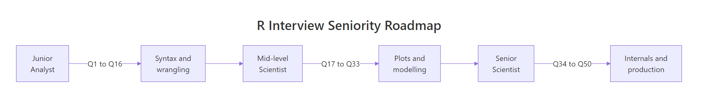
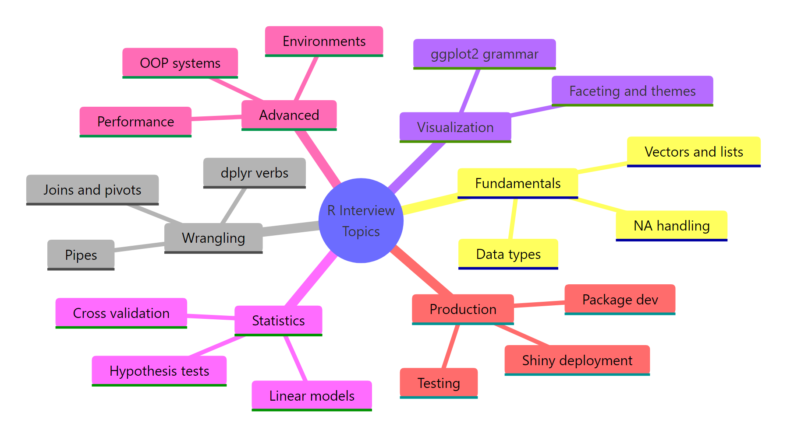

50 R Interview Questions Answered: From Junior Analyst to Senior Data Scientist
The 50 R programming questions that actually come up in junior, mid, and senior data science interviews -- with the answer interviewers want, the common wrong answer to avoid, and exactly what each question is testing.
Every question below is grouped by the seniority level at which it typically lands. Each answer is runnable -- edit any code block in place, press Run, and see the result. Use it as a practice sheet the week before your interview.
What R fundamentals questions come up in junior interviews?
Junior interviews test whether you can read basic R code without flinching. Interviewers probe data types, vectorisation, and NA handling because these trip up people who memorised syntax but never ran a script. Start with a small payoff example so you can feel the "R way" before the questions begin.
That 4-line snippet combines two things interviewers love: logical subsetting (selecting elements that satisfy a condition) and vectorisation (operating on the whole vector without a loop). If you can explain what x > 25 returns and why R can slice x with it, you already answer Q6 and Q7 below.
Q1: What are the atomic data types in R?
R has six atomic types: numeric (double), integer, character, logical, complex, and raw. Everything else -- vectors, lists, data frames -- is built on top of them.
What the interviewer is testing: whether you know that 42 and 42L are different (double vs integer) and that you reach for typeof() rather than class() when you want the underlying storage type.
Q2: What is the difference between a vector, a list, and a data frame?
A vector holds elements of one type. A list holds elements of any type, including other lists. A data frame is a list of equal-length vectors -- every column is a vector and the columns must all have the same number of rows.
Common wrong answer: "A data frame is a matrix." It's not. Matrices force every cell to share one type; data frames allow different types per column.
Q3: When should you use <- versus = for assignment?
Use <- for top-level assignment and = only for named function arguments. Both technically work for assignment, but mixing them inside function calls causes subtle bugs.
What the interviewer is testing: tidyverse style guide awareness. Answering "they're the same" marks you as someone who hasn't read a style guide.
Q4: How do you handle missing values (NA)?
Three tools cover 95% of cases: is.na() to detect them, na.rm = TRUE to skip them in summaries, and complete.cases() to drop rows that contain them.
Common wrong answer: "Replace NA with 0." Only if zero is genuinely meaningful -- replacing a missing age with 0 corrupts every downstream calculation.
Q5: What is a factor and when would you use one?
A factor stores categorical data as an integer vector plus a character "levels" attribute. Use factors when a variable has a known, fixed set of values -- day of week, treatment arm, product category -- especially before fitting a model that will need dummy variables.
stringsAsFactors = FALSE or use readr::read_csv() which never does this.Q6: What is the difference between [, [[, and $?
[ returns an object of the same type (a sub-list from a list, a sub-vector from a vector). [[ extracts a single element and drops one level of structure. $ is shorthand for [[ with a name.
What the interviewer is testing: debugging intuition. Mixing [ and [[ is a top-5 source of R bugs, and seeing you answer this without hesitation signals you have written real code.
Try it: Write a function ex_safe_mean(x) that returns the mean of a numeric vector while ignoring any NA values. Test it on a vector that contains one NA.
Click to reveal solution
Explanation: na.rm = TRUE tells mean() to drop NA before computing. Without it, any NA in the vector poisons the result.
Q7: Why is a vectorised operation faster than a for-loop in R?
R vectorised functions like mean(), sum(), and arithmetic operators call compiled C routines that iterate in native code. A hand-written R-level for loop dispatches every iteration through the R interpreter, which is roughly 10-100x slower.
x + 1, R hands the whole vector to compiled C, which runs one loop with no per-element overhead. That is why idiomatic R code avoids explicit loops wherever possible -- the performance gap is not cosmetic.Q8: How do you read a CSV file in R?
Three common options: read.csv() (base R, slow, quirky), readr::read_csv() (tidyverse, fast, sane defaults, returns a tibble), and data.table::fread() (fastest, auto-detects separators and types).
What the interviewer is testing: awareness that read.csv() is rarely the right default on real data. For anything over a few MB, name fread() or read_csv() and explain why.
How do interviewers test data wrangling with dplyr and tidyr?
Mid-level interviews move beyond syntax into daily wrangling work. Interviewers want to see that you can get from a messy data frame to an answer in a few readable lines. The dplyr verbs (filter, select, mutate, group_by, summarise, arrange) plus pivot_longer cover almost every question in this block.
Q9: Why reach for dplyr instead of base R for wrangling?
dplyr code reads like a sentence and composes naturally through the pipe. Base R works, but the same pipeline takes more characters and mixes bracket indexing, apply variants, and aggregate in ways that are hard to scan.
The pipeline filters rows, groups by cylinder count, and returns three summaries per group. Every step names itself.
Q10: What is the difference between filter(), subset(), and [?
filter() is the dplyr verb for row selection. subset() is the base R equivalent and handles both rows and columns in one call. df[df$col > 5, ] is the lowest-level form. All three work, but only filter() composes cleanly in a pipeline.
Q11: mutate() vs transform()?
Both add or modify columns. mutate() is dplyr, evaluates expressions sequentially (so a new column can reference the one you just created in the same call), and plays nicely with group_by(). transform() is base R and evaluates all expressions in parallel -- you cannot chain them.
Q12: How do group_by() and summarise() work together?
group_by() attaches a grouping structure to a data frame without changing the data. summarise() then collapses each group to a single row, applying the functions you supply. Forget to ungroup afterwards and the data stays grouped for every downstream verb.
ungroup() when you finish summarising. A grouped data frame silently changes the behaviour of later mutate() and slice() calls, producing bugs that only show up in edge cases.Q13: Which *_join() should you use?
inner_join(x, y) keeps only rows with matches in both tables. left_join(x, y) keeps every row in x and fills NA where y has no match. right_join() mirrors that. full_join() keeps everything from both. anti_join(x, y) returns rows of x with no match in y, and semi_join(x, y) returns rows of x that do match (without pulling columns from y).
The left_join kept all four orders and pulled the name where it could. Customer 30 exists in orders but not in customers, so the name is NA.
Q14: When do you use pivot_longer() vs pivot_wider()?
pivot_longer() turns wide data (one column per measurement) into long data (one column named name, one named value). pivot_wider() does the reverse. Long format is the shape ggplot2 and tidymodels expect.
Q15: Native |> pipe vs magrittr %>%?
|> ships with base R (4.1+) and is slightly faster because it is parsed rather than rewritten at runtime. %>% comes from magrittr, is a little more flexible (it supports . as an explicit placeholder), and only requires magrittr or dplyr to be loaded.
|> for new code. It removes a package dependency for something as fundamental as a pipe, and every modern tidyverse tutorial now uses it. Fall back to %>% only when you need the . placeholder for functions that don't take the data as their first argument.Q16: How do you apply a transformation across many columns at once?
Use across() inside mutate() or summarise(). You pass a column selector (like where(is.numeric)) and a function, and it applies the function to every matching column.
Q17: What is the most common dplyr bug you've fixed?
Interviewers love open-ended questions. A strong answer: "forgetting to ungroup() after a summarise() with multiple grouping variables, so a later mutate() silently ran per-group instead of over the whole data frame." It shows you have debugged real pipelines.
Try it: Using across(), compute the median of mpg, hp, and wt in mtcars grouped by cyl. Store the result in ex_mt_across.
Click to reveal solution
Explanation: across() applies median to each listed column and summarise() collapses each group to one row.
What ggplot2 and visualization questions come up?
Data-facing roles almost always ask one or two ggplot questions. The goal is not to rebuild the grammar from scratch in the interview -- it is to show that you can read a plot spec, know where to hang a new layer, and troubleshoot common bugs.
Q18: Explain the grammar of graphics in one sentence.
A ggplot is a data source plus a mapping from data columns to visual aesthetics (x, y, colour, size), rendered as one or more geometric layers on top of scales, facets, and a theme.
Q19: What is the difference between aes() and setting an aesthetic outside aes()?
Anything inside aes() is a mapping -- it varies with a data column. Anything outside aes() is a fixed aesthetic -- it applies uniformly. aes(colour = cyl) colours points by the cyl column; colour = "red" outside aes() paints every point red.
The colour inside aes() varies by cylinder count, so the legend appears. The size = 3 outside aes() is a fixed size -- no legend, every point is the same.
Q20: Why does layer order matter in ggplot2?
Layers paint on top of each other in the order you add them. A geom_smooth() added after geom_point() draws on top of the points; added before, the points draw on top of the line. For busy plots, always add geom_point() last so outliers stay visible.
Q21: facet_wrap() vs facet_grid()?
facet_wrap() takes one grouping variable and wraps the resulting panels into a rectangular grid. facet_grid() takes two variables (rows and columns) and produces a full matrix of panels with shared axes.
One panel per cylinder count -- ideal when you have a single grouping variable.
Q22: What is the difference between scale_*, coord_*, and theme()?
scale_* controls how data values map to aesthetics -- the axis breaks, colour palette, or log transform. coord_* controls the coordinate system -- cartesian, polar, flipped, fixed aspect ratio. theme() controls non-data appearance -- grid lines, font sizes, legend position, background colours.
ggsave("plot.png", width = 8, height = 5) produces an 8x5 inch plot at the session's DPI. Pass units = "px" and dpi = 300 when you need exact pixel output for a web layout.Q23: How would you fix an overplotted scatterplot?
Four common moves: (a) add alpha = 0.3 so overlapping points darken, (b) geom_jitter() to break exact ties, (c) switch to geom_hex() or geom_density_2d() for density, (d) sample down if the data is huge.
At alpha = 0.05 each point contributes just 5% opacity, so genuine density shows up as darker regions.
Q24: How do you save a ggplot to disk?
ggsave() with a filename takes the last plot that was printed or a plot object you pass explicitly. Always specify width, height, and dpi -- otherwise you are at the mercy of whatever graphics device is open.
Try it: Plot mpg against wt from mtcars and facet the panels by cyl. Assign the plot to ex_facet.
Click to reveal solution
Explanation: facet_wrap(~ cyl) splits the single scatter into one panel per cylinder value.
Which statistics and modelling questions do interviewers love?
Statistical questions are where R roles genuinely diverge from Python roles. Interviewers at pharma, biotech, and analytics teams want to see that you can fit a model, read its output, and discuss what the p-values and assumptions really mean. Memorising the lm() syntax is not enough -- you should be ready to defend your interpretations.
Q25: How do you write an interaction term in lm()?
y ~ x1 + x2 is additive. y ~ x1 * x2 expands to x1 + x2 + x1:x2 -- main effects plus the interaction. y ~ x1:x2 alone fits only the interaction with no main effects, which is usually a bug.
The model fit four terms: intercept, main effect of wt, main effect of hp, and their interaction wt:hp.
Q26: What does summary(model) tell you?
Four blocks of output: the call, residuals (min/median/max -- a rough sanity check), the coefficients table (estimate, standard error, t-value, p-value, and stars), and model-level statistics (residual standard error, multiple and adjusted R^2, F-statistic).
What the interviewer is testing: whether you read the table end to end. Saying "the R^2 is 0.88, so it's a good model" without checking the interaction p-value or residuals is a red flag.
Q27: What are the assumptions of linear regression?
Remember "LINE": Linearity (the mean of Y is linear in X), Independence (residuals are uncorrelated), Normality (residuals are approximately normal, mostly matters for inference on small samples), and Equal variance a.k.a. homoscedasticity. Check them with plot(model) -- the four diagnostic plots are designed for exactly this.
Q28: How do you fit a logistic regression?
glm() with family = binomial. The response must be a 0/1 vector or a two-level factor.
The am column is 0 for automatic and 1 for manual. Each coefficient is a log-odds -- take exp() for an odds ratio.
Q29: How do you split data into train and test without leakage?
Create the index before you touch the response variable, always split the raw data (not a scaled version), and fit any preprocessing (scaling, imputation, target encoding) on the training set only.
scale() over the whole data and then split, the test set's mean and standard deviation have influenced the training features. Split first, scale using the training mean and standard deviation, then apply the same transform to the test set.Q30: How do you run cross-validation?
Three common options: hand-rolled for loop over caret::createFolds(), the full caret::train() pipeline, or tidymodels' rsample::vfold_cv() + fit_resamples(). Interviewers care less about which framework you name and more about whether you understand why k-fold cross-validation exists -- to get a more stable estimate of out-of-sample error than a single train/test split gives.
Q31: What are the differences between RMSE, MAE, and R^2?
RMSE is the square root of the mean squared error -- in the same units as the response, penalises large errors heavily. MAE is the mean absolute error -- more robust to outliers. R^2 is the proportion of variance in the response explained by the model -- unitless, can be misleading on small samples or with many predictors (use adjusted R^2).
On this tiny 10-row test set the numbers are noisy -- that is exactly why cross-validation exists.
Q32: Which hypothesis test do you reach for first?
Two continuous groups -- t.test(). One continuous, one categorical with more than two levels -- one-way ANOVA with aov(). Two categoricals -- chisq.test() (or fisher.test() on small counts). Non-normal paired continuous data -- wilcox.test(paired = TRUE).
Q33: What is the difference between a p-value and an effect size?
A p-value answers "assuming no real effect, how unusual is my data?" An effect size answers "how big is the effect?" You can have a microscopic p-value on a meaningless effect (with enough data) or a huge effect size that looks insignificant (on a tiny sample).
and is what shows you actually read stats rather than recited it.Try it: Fit lm(mpg ~ wt + hp, data = mtcars) and extract the R^2 into ex_r2.
Click to reveal solution
Explanation: summary() on an lm object exposes a list that includes $r.squared. No need to compute it by hand.
How do senior R interviews test performance and internals?
At senior level the questions shift from "can you use R" to "do you understand how R actually works." Interviewers ask about environments, copy-on-modify, and OOP systems because these shape every design decision in a package or large Shiny app.
Q34: What is an environment in R?
An environment is a named collection of bindings -- roughly, a hash map from names to values. Every function call creates a fresh environment, and every package lives in its own environment. The global environment (globalenv()) is where your top-level variables live.
Q35: How does lexical scoping work in R?
When R evaluates a variable inside a function, it walks a chain of environments: first the function's own local environment, then the environment where the function was defined (not where it was called), then that environment's parent, and so on up to the global environment and the base environment.
Q36: What is copy-on-modify?
R appears to pass arguments by value. Under the hood, it passes a reference and only makes a copy when you modify the object. That is why you can safely call f(big_df) without paying the cost of a copy unless f actually mutates big_df.
Common wrong answer: "R is pass-by-value." It behaves that way semantically, but the implementation is reference-based with lazy copying. Interviewers like this question because the correct answer reveals whether you have actually read about R internals.
Q37: What are the main R object-oriented systems?
S3 is the original -- method dispatch on the first argument's class attribute, no formal class definitions. S4 adds formal classes with slots and multi-dispatch, mainly used in Bioconductor. R6 is reference semantics (mutable) with classes and inheritance, popular in Shiny. R7 (S7) is the new cross-team system aiming to replace S4 for most use cases.
Q38: How do you profile slow R code?
system.time() for a one-off wall-clock measurement. microbenchmark::microbenchmark() for accurate sub-millisecond timings with multiple replicates. profvis::profvis() for line-by-line flame graphs so you can see which call is actually expensive.
Numbers are in microseconds -- vectorised is about 100x faster here, which lines up with the Q7 answer above.
Q39: How do you parallelise R code?
The parallel package ships with base R and exposes mclapply() (Unix only, fork-based) and parLapply() (cross-platform cluster-based). The future and furrr packages wrap these in a tidyverse-friendly API and let you flip between sequential, multicore, and cluster back-ends with one line.
Q40: When should you reach for Rcpp?
When a profile shows a hot inner loop that cannot be vectorised away. Rcpp lets you write the loop in C++ and call it from R with almost no friction. Typical wins are 10-100x on recursive algorithms, custom iteration with early exit, and large bootstrap resampling loops.
Q41: What is lazy evaluation in R?
Function arguments are evaluated the first time they are used, not when the function is called. This is what powers non-standard evaluation (NSE) in dplyr -- filter(df, x > 5) captures the expression x > 5 rather than evaluating it in the caller's environment.
.data$x or {{ x }} inside dplyr verbs. R CMD check complains about "undefined global functions or variables" otherwise because lazy evaluation hides the reference from static analysis.Q42: How do you monitor and reduce memory usage?
object.size(x) reports the size of a single object; lobstr::obj_size() is more accurate for lists that share references. gc() triggers garbage collection and prints current usage. To reduce memory, prefer data.table over data.frame for large tables, read CSVs with fread() or vroom, and rm large intermediates inside a function so they fall out of scope.
Try it: Use microbenchmark to compare mean(x) against a hand-written for loop that adds x[i] to a running total. Store the result in ex_bench.
Click to reveal solution
Explanation: The loop dispatches through the R interpreter on every iteration, while mean() calls compiled C once. The speed gap is the whole point of Q7.
What production and scenario questions appear for senior roles?
Senior candidates at R-heavy teams (finance, bio, clinical trials, analytics consultancies) get a second round that drifts from pure R into software engineering: package development, testing, dependency management, deployment, and scenario design. The goal of this block is to show you can ship, not just explore.
Q43: How do you structure an R package?
usethis::create_package("mypkg") scaffolds the minimum: DESCRIPTION (metadata, dependencies), NAMESPACE (exports and imports, normally generated from roxygen comments), an R/ folder for source, a man/ folder for generated Rd files, and a tests/ folder. devtools::document() regenerates the man pages and namespace from your @export tags.
Q44: How do you write a unit test with testthat?
Create tests/testthat/test-<feature>.R and use expect_equal, expect_true, expect_error, or expect_snapshot. Tests run on every devtools::check() and in CI.
Q45: What is renv and why does your team use it?
renv gives every project its own package library and a renv.lock file that pins exact package versions. New contributors run renv::restore() to recreate your environment. It is the R equivalent of requirements.txt + virtualenv and it is the answer interviewers want when they ask "how do you handle reproducibility."
Q46: Explain the architecture of a Shiny app.
Three pieces: a UI function that describes what the user sees, a server function that reads inputs, computes outputs, and pushes them back, and a shinyApp() call that wires them together. The server uses reactive expressions -- values that re-compute whenever their inputs change -- to avoid rerunning expensive code on every keystroke.
Q47: How do you deploy a Shiny app?
Three common targets. shinyapps.io is posit's managed service -- one click from RStudio, limited free tier. Posit Connect (formerly RStudio Connect) is the enterprise option -- on-prem or VPC, with scheduling and access control. Docker + any orchestrator gives you full control at the cost of engineering time, which is the typical answer at bigger companies.
Q48: How do you set up CI for an R package?
usethis::use_github_action("check-standard") creates a .github/workflows/R-CMD-check.yaml that runs R CMD check on every push against several OS + R version combinations. Add use_coverage() for coverage, use_pkgdown() + use_pkgdown_github_pages() for a documentation site.
Q49: Which debugging tools do you actually use?
traceback() after an error shows the call stack. browser() inside a function opens an interactive prompt at that line. debug(f) arms the function so the next call drops into browser() on entry. options(error = recover) drops you into a frame-picker on any error. In practice, browser() at the suspicious line plus print() statements cover 90% of real bugs.
testthat::expect_snapshot() is the right way to test ggplot output. Instead of comparing pixel-level images, it compares text-based layer specs, so the test only fails when the underlying plot semantics change.Q50: Design a daily-refreshed R dashboard for a 10M-row sales table.
This is the classic senior scenario. A strong answer has four layers:
- Ingest: pull the daily delta with
DBI+odbcorarrow::read_parquet(), never load the whole 10M rows into memory unless you actually need them. - Aggregate: do the heavy group-by in the database (
dbplyrtranslates dplyr to SQL so you never leave the pipeline), return only the pre-aggregated metrics needed by the dashboard. - Serve: Shiny with
reactive()for user-driven filters andbindCache()for the expensive summaries. Host on Posit Connect (or Shiny Server + Docker) so scheduling + access control are covered. - Monitor: log to a structured format, wire
R CMD check+testthatsnapshot tests for the transformation layer into GitHub Actions, and add an uptime check on the Shiny route.
What the interviewer is testing: whether you treat a dashboard as a production system (ingest, transform, serve, monitor) rather than a one-off script.
Try it: Write a testthat test for a function ex_rev(s) that reverses a string. Verify it works on "abc" and on the empty string.
Click to reveal solution
Explanation: Two assertions -- the normal case and the edge case. expect_equal compares with numerical tolerance; for strings it reduces to identical.
Practice Exercises
Three capstone exercises that combine multiple concepts from the 50 questions. Solve each on paper first, then run the starter block to check yourself.
Exercise 1: Grouped summary with sorting
Given the small data frame below, write a dplyr pipeline that (a) keeps rows where x > 0, (b) groups by grp, (c) returns n (row count) and mean_y per group, and (d) sorts the result by mean_y descending. Save it to out1.
Click to reveal solution
Explanation: Four dplyr verbs chained by the pipe, one per step of the prompt. .groups = "drop" ungroups at the end so downstream code won't accidentally run per-group.
Exercise 2: Predictions with confidence intervals
Fit lm(mpg ~ wt + hp + factor(cyl)) on mtcars. Then write a function my_predict_tidy(model, new_data) that returns a tibble with columns fit, lwr, upr (95% confidence interval on the mean response).
Click to reveal solution
Explanation: predict() with interval = "confidence" returns a matrix with fit, lwr, upr columns. as_tibble() converts it to the tidy format interviewers expect in 2026.
Exercise 3: Event summary scenario
You are given the event log my_big_data below. Write code that (a) counts distinct event_type per user_id, (b) keeps only users with more than 1 event, (c) returns their most recent event as a single row per user, with columns user_id, n_events, latest_time, latest_type. Save the final result to out3.
Click to reveal solution
Explanation: mutate(n_distinct()) inside group_by keeps the row structure so later slice(1) can pick the most recent per user. The select() at the end renames and reorders columns to match the expected output.
Complete Example: a 4-minute mock interview walkthrough
Here is what a real mid-level R interview sequence looks like. Three questions in a row on mtcars, narrated the way you should narrate them out loud.
Interviewer: "Load mtcars and show me the mean mpg per cylinder count."
"I grouped by cylinder count and summarised the mean mpg. Four-cylinder cars average 26.7 mpg, eights average 15.1 -- roughly a 2x gap, which matches the intuition that bigger engines use more fuel."
Interviewer: "How would you test whether four-cylinder cars have higher mpg than eight-cylinder cars?"
"A one-sided two-sample t-test with alternative = 'greater' because I have a directional hypothesis. The p-value is 2.7e-7, well below any reasonable threshold, so I reject the null that the two groups have the same mean mpg. I would follow up with plot(density(...)) to check normality on a sample this small."
Interviewer: "Plot the relationship between weight and mpg, coloured by cylinder count."
"Points coloured by cylinder count and a linear trend per group. The three lines clearly fan out -- heavier cars have lower mpg, and at the same weight eight-cylinder cars are still below four-cylinder cars. That tells me weight isn't the whole story and cylinder count adds real information, which matches the t-test I just ran."
Three questions, three runnable blocks, each answer grounded in the previous one. That is the rhythm interviewers are grading you on.

Figure 2: Question ranges mapped to the seniority level that typically asks them.
Summary
| Category | Questions | Sample concept | Typical seniority |
|---|---|---|---|
| Fundamentals | Q1-Q8 | Data types, vectorisation, NA | Junior |
| Wrangling | Q9-Q17 | dplyr + tidyr pipelines | Junior / Mid |
| Visualization | Q18-Q24 | ggplot2 grammar, facets | Mid |
| Statistics | Q25-Q33 | lm, glm, train/test, metrics | Mid |
| Advanced | Q34-Q42 | Environments, OOP, performance | Senior |
| Production | Q43-Q50 | Packages, testing, Shiny, CI | Senior |

Figure 1: The six topic clusters the 50 questions fall into.
Three things to take into the interview: read the table end to end before answering (Q26), explain what the interviewer is testing when you give the answer, and have a scenario story ready for the last question (Q50 is the single most common senior closer).
References
- R Core Team -- An Introduction to R. Link
- Wickham, H. -- Advanced R, 2nd edition. Link
- Wickham, H. & Grolemund, G. -- R for Data Science, 2nd edition. Link
- dplyr documentation -- tidyverse reference. Link
- ggplot2 documentation -- layered grammar reference. Link
- tidymodels -- modelling and resampling patterns. Link
- Posit -- native pipe announcement. Link
- Patrick Burns -- The R Inferno. Link
Continue Learning
- How to Learn R -- the structured learning path that prepares you for every question on this page.
- R for Data Scientist Careers -- which job titles actually ask these questions and what salary bands they live in.
- R Resume Skills That Get Interviews -- how to turn the answers above into resume bullet points recruiters notice.